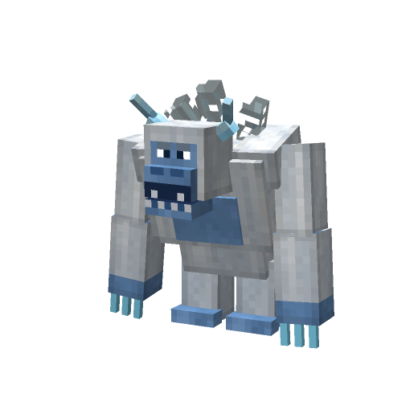
Bossen arèneServeur Minecraft français · moddé 1.21.1
D’une île sur la mer jusqu’au trou noir
Bâtis ton île, bats des boss géants, coule des pirates, puis décolle.
Gratuit · Windows, Mac et Linux · le launcher installe tout
Prêt pour la suite ?
Ton aventure commence ici.
Le launcher Casteria installe le jeu, les mods et les shaders, puis se met à jour tout seul. Tu cliques sur JOUER, tu arrives au palais.
- 1Télécharge le launcher
- 2Choisis ton pseudo
- 3Clique sur JOUER
- 4Crée ton mot de passe : /register
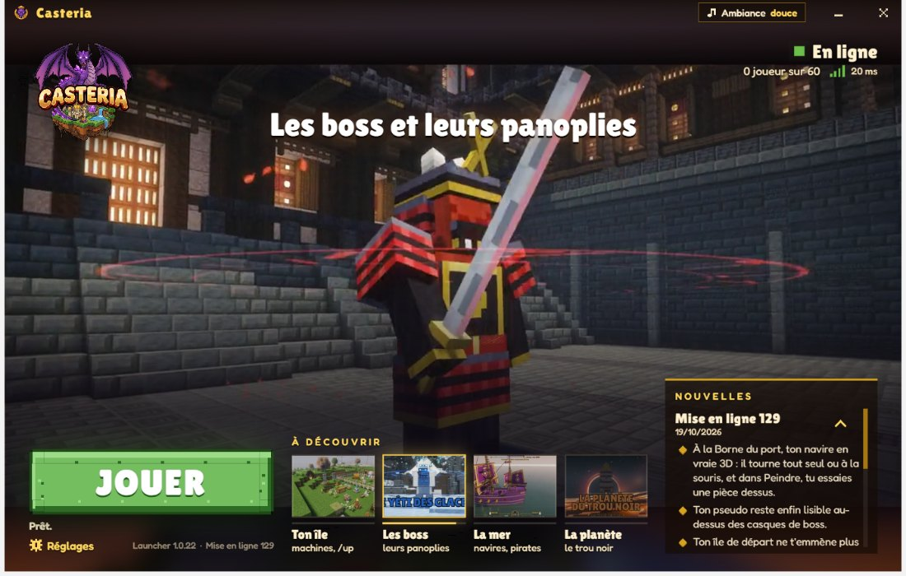
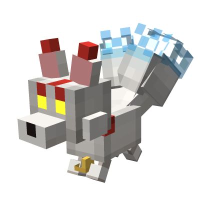
Casteria en chiffres
Une carte au trésor, du port au trou noir
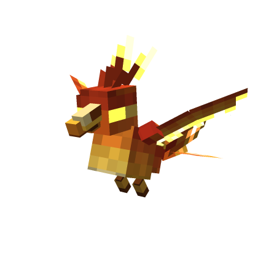
36familiers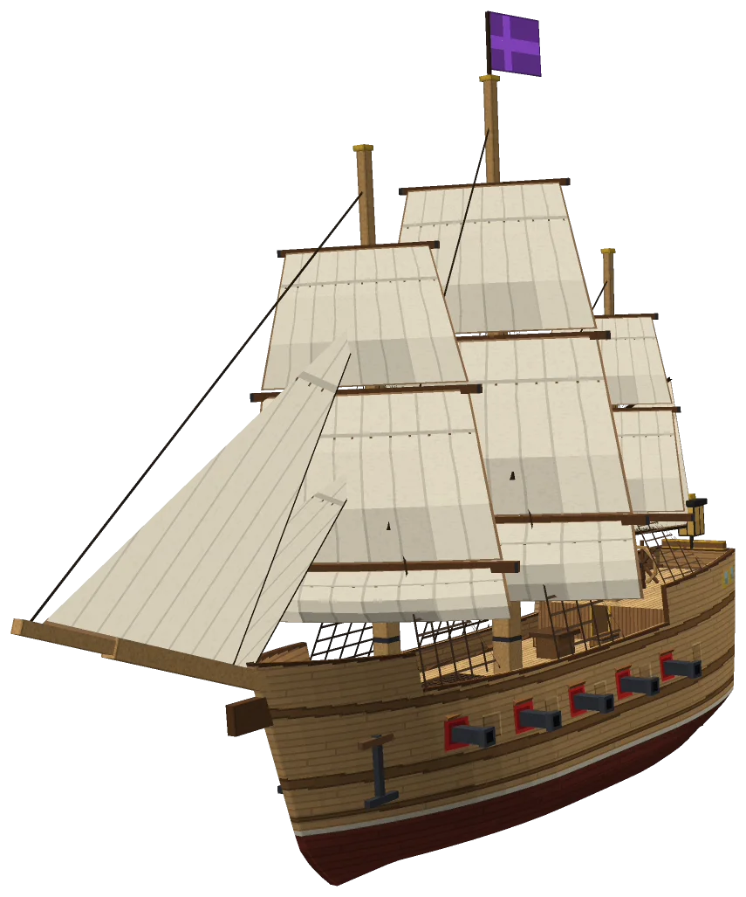
5navires à barrer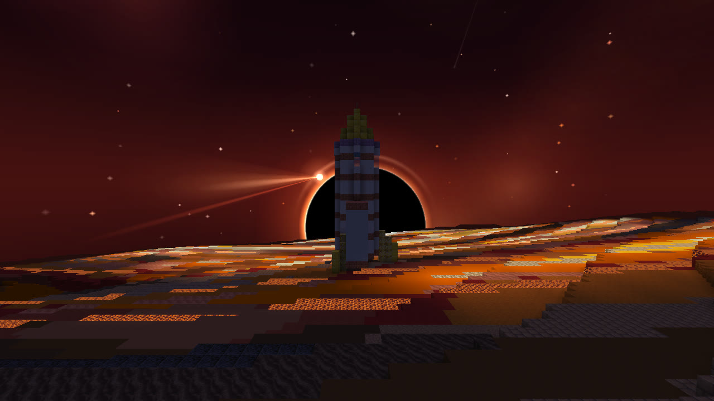
1planète sous un trou noir
Le voyage de Casteria
De ton île au trou noir, niveau après niveau
Voici la route d'un joueur, dans l'ordre où elle s'ouvre : chaque grande étape a son niveau, du premier jour jusqu'au niveau 70.
-
Niveau 1, dès ton arrivée
Ton île sur la mer
Gaspard t'accueille au palais, puis ton île t'attend : le Noyau au centre, deux Casse-cailloux dans ton sac. Tes machines produisent toutes seules, et chaque mur repoussé te donne de la place.
Par où commencer -
Niveau 3, ton premier boss
Les boss, arène après arène
Le Roi Champignon t'attend dès le niveau 3 : tape /boss. Chaque victoire ouvre le boss suivant, quand tu as son niveau, et chacun a son armure à gagner.
Voir les boss -
Niveau 15, ton premier navire
La mer et ses pirates
Ta Chaloupe s'achète à la Borne du port, à l'est du palais. Coule des pirates, remonte des cargaisons et des trésors. Quatre navires de plus t'attendent, jusqu'au Vaisseau amiral du niveau 60.
La mer et les pirates -
Niveau 16, ta première clé offerte
Les donjons d'Anselme
Au palais, Anselme t'ouvre le Temple Creux dès le niveau 16, puis le Sanctuaire des Sables au niveau 23. Seul ou à trois, trois niveaux chacun, et un coffre pour chaque joueur.
Les donjons -
Niveau 60, au bout de la route
La planète sous le trou noir
Sur ton île 2, l'Esquif, une fusée en ruine, se rénove en cinq paliers. Elle t'emmène sur une planète où l'air se compte et où le sol brûle. Du niveau 60 au 66, ses trois anneaux s'ouvrent l'un après l'autre, et au bord du vide, un dernier adversaire t'attend : tu l'affrontes seul.
Voir la planète
Au palais
Deux portes, deux façons de tenter ta chance
Au cœur du palais, un casino où l'on mise ses minerais. Devant Anselme, deux donjons à faire seul ou à trois.
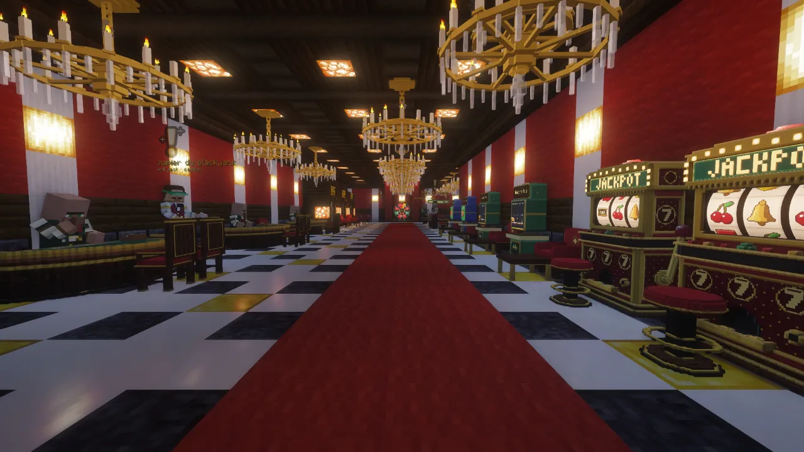
Le casino du palais Neuf jeux : la roulette européenne à plusieurs, le blackjack et son double, les machines à sous, le Wagon fou... On y mise ses minerais, jamais ses jetons. Entrer au casino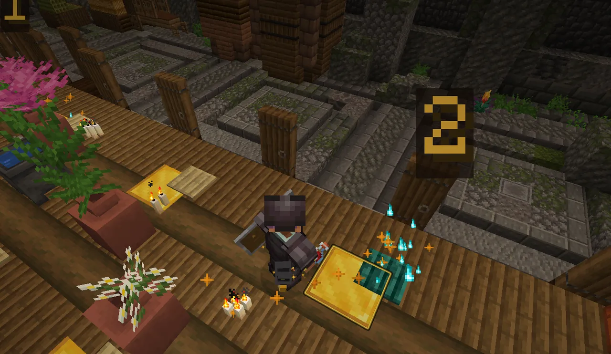
Les donjons Le Temple Creux et le Sanctuaire des Sables : trois niveaux chacun, de 1 à 3 joueurs, un coffre pour chacun et un classement par taille de groupe. Voir les donjons
Fait maison
Tout est fait pour Casteria
Des armes aux machines, de la ferme aux bêtes : chaque objet ici a été dessiné et codé pour le serveur. Tu ne les trouveras nulle part ailleurs.
Les armes
6 objets
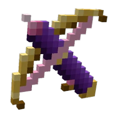
Arbalète de castérium
Sa flèche traverse et touche plusieurs créatures. Elle ne casse jamais : un castérium raffiné rend ses tirs.
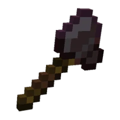
Hachette de lancer
Lance-la : elle frappe et revient dans ta main. Tranchant l'améliore, au lancer aussi.
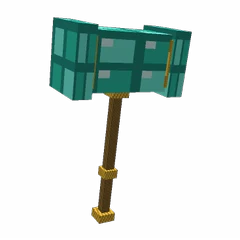
Marteau en diamant
Il creuse en 3 x 3 la pierre et la terre. Accroupi, un seul bloc.
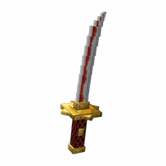
Sabre de l'Oni
L'arme d'un boss : trois coups en 4 secondes sur la même créature, et elle explose.
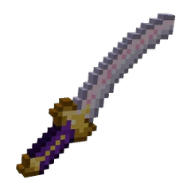
Katana en castérium
Clic droit : un élan de 6 blocs qui frappe les monstres sur son passage.
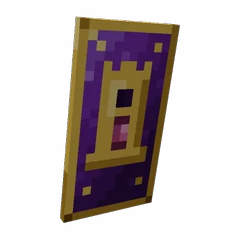
Bouclier en castérium
Contre les boss, la parade parfaite se réussit plus facilement.
La ferme et tes bêtes
9 objets
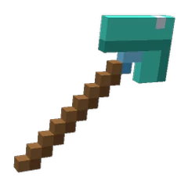
Houe de récolte
Clic droit sur une plante mûre : elle récolte et replante.
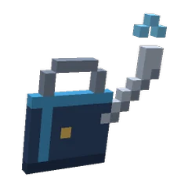
Arrosoir
Chaque plante arrosée a une chance de pousser d'un cran. Il ne s'use pas.
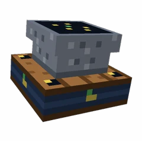
Semoir
Il plante et récolte tout seul. Colle-lui un coffre : la récolte y rentre.
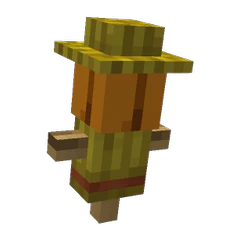
Épouvantail
Autour de lui, les plantes poussent quatre fois plus vite, sans poudre d'os.
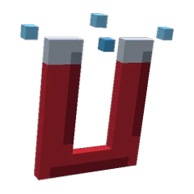
Aimant à objets
Allumé, il attire à toi les objets à 6 blocs.
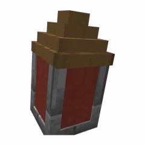
Enclos de ferme
Clôture, grange, auge et coffre, posés d'un coup. Tes bêtes n'en sortent jamais.
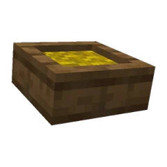
Distributeur de nourriture
Il nourrit tout seul les bêtes d'un enclos.
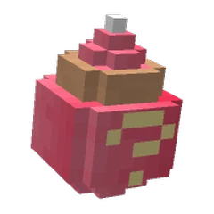
Œuf mystère
Il éclot dans un incubateur : une bête commune, rare... ou mythique.
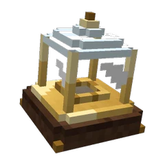
Incubateur
C'est là que tes œufs mystères éclosent.
Ton île
5 objets
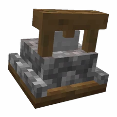
Casse-cailloux
La pierre de l'île, sans fin : ton premier revenu, le plus sûr.
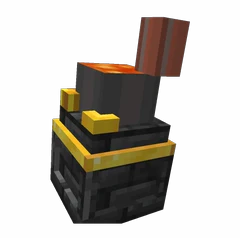
Fonderie d'or
Un creuset où l'or fond à ciel ouvert. Elle marche au charbon.
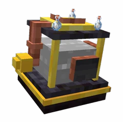
Potionnerie
Elle brasse plusieurs potions d'un coup, qui sortent dans le coffre à sa droite.
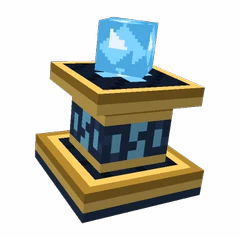
Coffre de l'île
Tous tes coffres à 40 blocs dans un seul écran : cherche, prends, et fabrique dans sa grille 3 x 3.
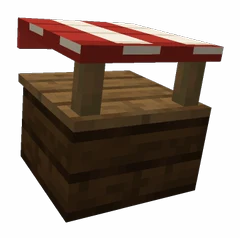
Comptoir du marchand
Il vend le contenu du coffre collé toutes les 5 minutes, même quand tu es absent.
Et au bout du voyage, l'Esquif : la fusée de ton île, qui t'emmène sur la planète.
Le journal des joueurs · chaque jour sur Casteria
La Gazette du palais
Tout ce qui fait vivre ton île, le palais et tes soirées
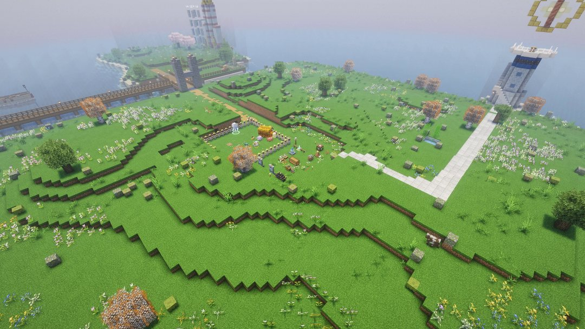
Ton île ne dort jamais
Tes machines s'animent et sonnent quand elles travaillent. Quand tu y joues, une épreuve tombe sur ton île toutes les 10 à 15 minutes : une machine qui surchauffe, des fuites, une bête évadée, une pie voleuse. Réussie, un gain ; ratée, un malus.
Au niveau 17, la Mine s'ouvre sous tes pieds : cinq étages dans le noir, des gemmes pour tes machines, et deux familiers qu'on ne trouve que là. Au niveau 24, la Batterie côtière : un canon sur ta rive ouest. Au coucher du soleil, une fois par heure au plus, la cloche sonne : huit boulets pour couler la voile. Au niveau 30, la Tour du ciel : à son pupitre, tu choisis le ciel de ton île, un pour le jour, un pour la nuit.
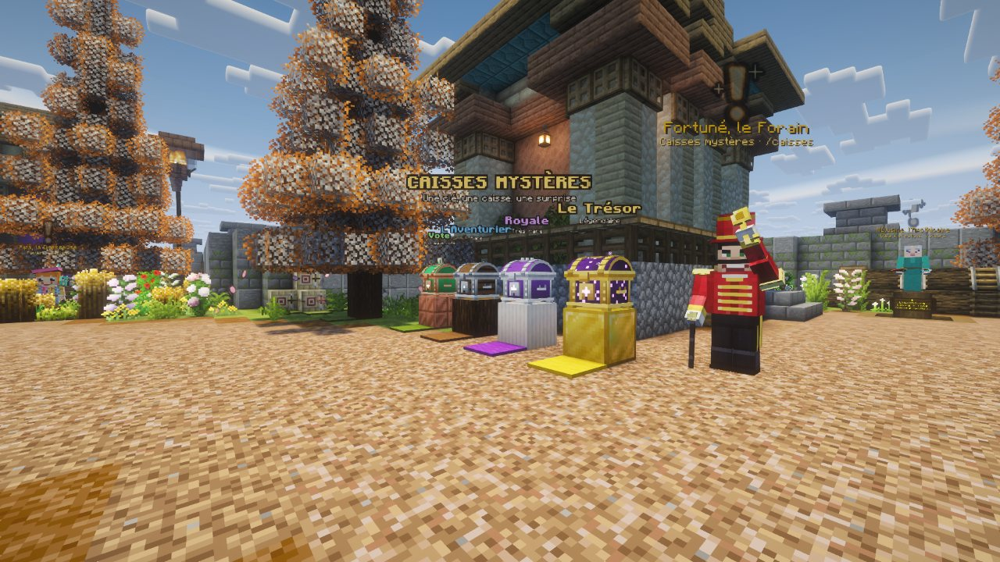
Les caisses s'ouvrent en grand
Une bande dorée, cinq secondes de suspense, et ton gain en grand. Un gros gain fait pleuvoir les jetons, comme à la roue et aux jackpots du casino. Le carnet des caisses montre chaque lot, sa rareté et sa chance. Quatre caisses au palais, celle du Corsaire au port, et celle des Donjons près d'Anselme.
103 quêtes chez Ludovic
Dix chapitres, du niveau 1 au 60 : de 40 à 500 XP selon leurs étoiles, et au bout de chaque chapitre, des tickets et un objet qu'on ne trouve que là. Tape /qp.
Trois missions par jour
Une facile (1 ticket), une moyenne (2), une difficile (4), de nouvelles à minuit. Enchaîne les jours : des tickets en prime.
Le soir, au palais
18 h 30 : le Sol qui lâche. 20 h 15 : le Défi Éclair (le week-end aussi à 11 h et 14 h 30). 21 h : la Bataille de neige. Tape /participer de partout : on vient te chercher 10 secondes avant.
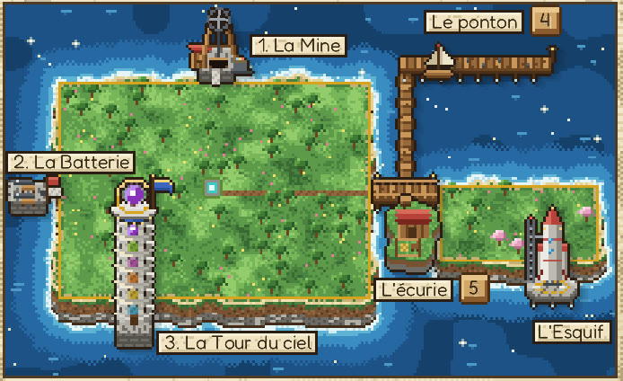
Ton île, redessinée
Son écran montre la mer et chaque lieu à sa vraie place, jusqu'à l'Esquif. Tape /iles, de partout.
Le palais a ses voix
Les habitants te parlent, Anselme te suit de sa voix dans les donjons, un présentateur lance les mini-jeux et une radio te guide sur la planète. Le curseur « Voix » des options les règle.
Le Défi Éclair
Cinq jeux rapides au palais, tirés parmi douze : L'Intrus et Calcul Éclair viennent d'arriver. Personne n'est éliminé, rien à perdre : des jetons dès ta première réponse.
Faites vos jeux !
Au casino, le croupier annonce chaque partie : « Faites vos jeux », puis « Rien ne va plus » quand la bille part à la roulette. Au blackjack, il parle comme un villageois : « Hmmm... Faites vos jeux. »
Le mode Héroïque
Bats un boss une fois : son mode Héroïque s'ouvre. Le même boss, bien plus dur, avec une phase de plus ; la même armure à gagner, avec plus de chances pour chaque pièce.
Tes compagnons
36 familiers te suivent partout. Certains ne s'achètent pas : tu les trouves dans ta Mine, en mer, sur la planète, dans tes champs, au casino ou au fond d'un donjon. Onze montures, au sol, dans les airs ou dans l'eau. Et dans tes enclos, des bêtes de commune à mythique.
Ton île à plusieurs
Avec /amis, invite tes amis et choisis leurs droits. Avec le droit Machines, un ami récolte tes machines même sans toi : sa récolte est pour lui.
Le Bac, à l'Établi
Il garde 16 piles d'un seul objet (64 et 256 pour les plus grands) et montre son compte sur sa façade.
Objets et recettes
/recettes ouvre le livre de chaque objet du serveur : sa recette, et à quoi il sert.
Les boss
Chaque boss de Casteria fait son entrée
Arène après arène, boss après boss. Chaque victoire ouvre le suivant, et chacun a ses attaques, ses phases et sa manière de te surprendre. En voici trois. Les autres, tu les découvriras en jeu.
Tire la carte du dessus pour voir la suivante.
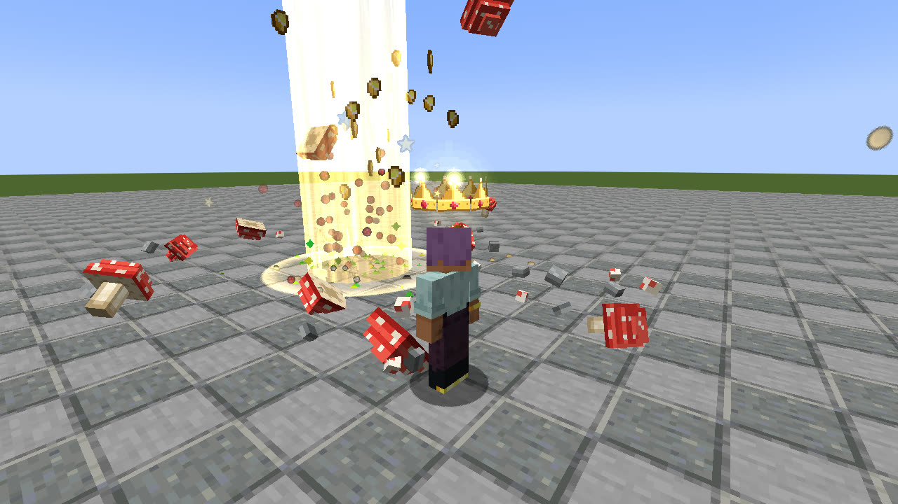
À son entrée« Hop là ! À genoux devant le Roi Champignon ! »
Quand il tombe« Non ! Ma couronne... mon royaume... tout moisi ! »
Ta victoire
Un boss qui tombe, ça se voit
- Il vole en morceaux, faits de sa propre matière.
- Une gerbe de jetons jaillit d'une colonne de lumière.
- Une couronne de lumière se pose sur chaque vainqueur.
Et chaque boss a sa voix : il te parle à son entrée, et une dernière fois quand il tombe. Les premiers fanfaronnent ; les plus redoutables font froid dans le dos.
Chaque boss a son armure, et chaque armure son pouvoir
Respirer sans fin sous l'eau. Sauter une seconde fois en l'air. Marcher sur la mer avec l'armure du Yéti. Chaque panoplie change ta façon de jouer.
- Chaque pièce donne déjà un bonus ; les quatre ensemble éveillent le pouvoir.
- À la forge, tes éclats de boss deviennent la pièce qui te manque.
- Un mode Héroïque pour ceux qui en redemandent.
- Les pouvoirs des armes et des armures se voient en 3D, avec leurs sons.
Le combat
Chaque arme a ses coups
Sur Casteria, chaque arme frappe à sa façon et a son combo : un revers, un coup en avant, un balayage qui prend plusieurs monstres d'un seul geste. Tiens le clic, ton arme enchaîne son combo. Et les armes de boss laissent une traînée à la couleur de leur boss.
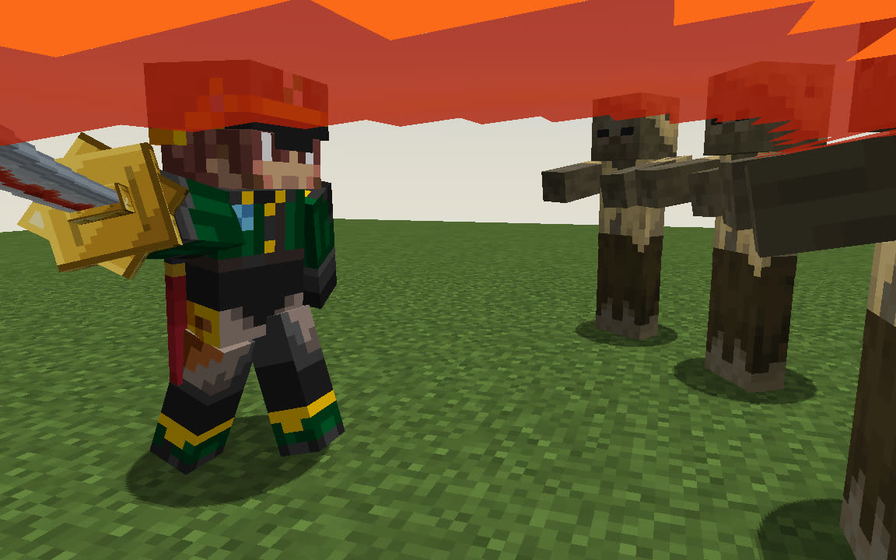
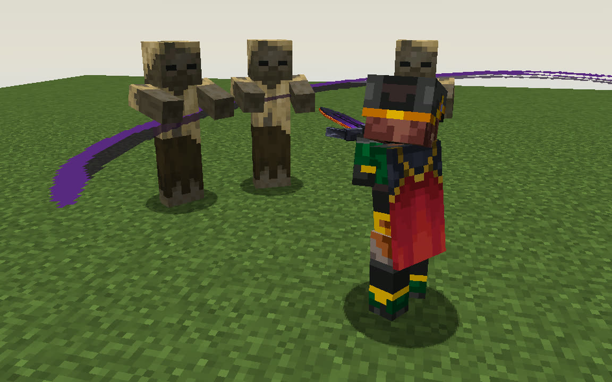
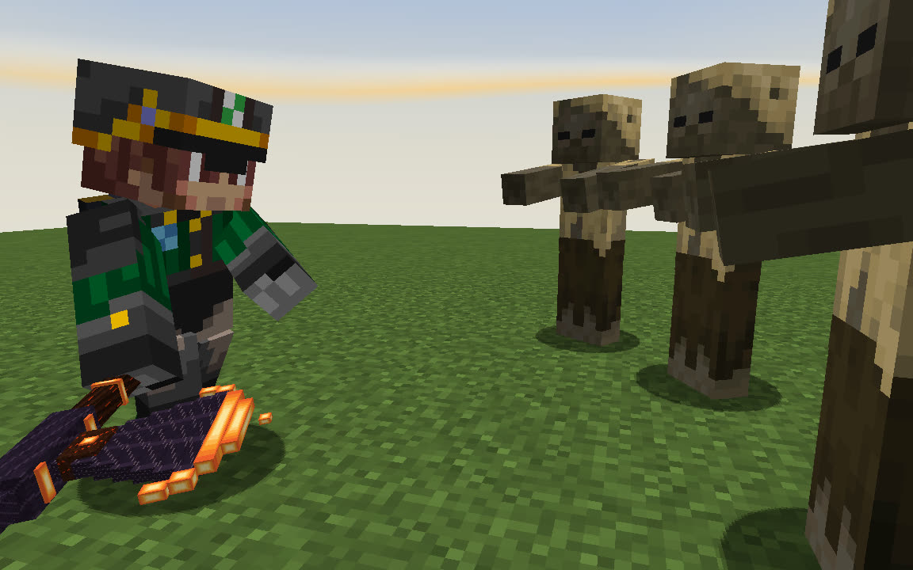
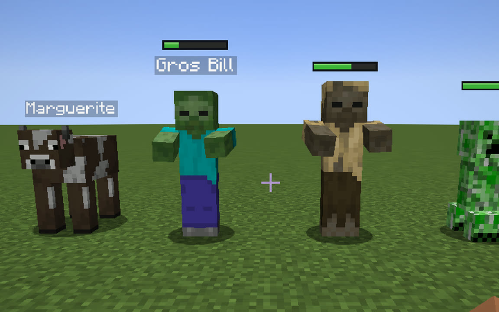
Le sang se règle dans le launcher : normal, réduit ou aucun.
Au bout du voyage
Une planète sous un trou noir
Sur ton île, une fusée en ruine : l'Esquif. Remets-la en état, palier après palier, puis décolle. Là-haut, l'air se compte, le sol brûle, et au bord du vide, un dernier adversaire t'attend.
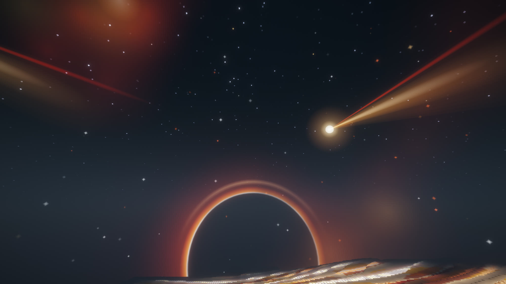
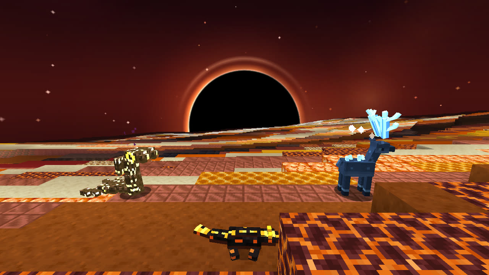
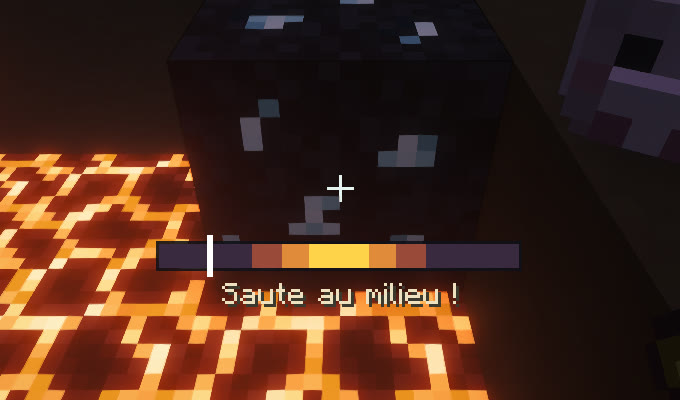
La boutique
Soutiens le serveur, fais-toi plaisir
Les crédits sont la monnaie de la boutique, à part des jetons. Avec eux, tu t'offres des familiers et des montures qu'on ne trouve qu'ici. Ils s'achètent, et se gagnent aussi en jouant : les missions du jour, les votes, les quêtes de Ludovic.
- Des familiers et des bêtes rares
- Des clés de caisses, des couleurs de pseudo et des cadres de titre
- Des cadeaux pour tout le serveur
La suite, c'est toi
On t'attend en jeu.
Ton île t'attend déjà sur la mer. Le launcher est gratuit et installe tout.
Rejoins-nous
Télécharger le launcher Casteria
Pas de mods à chercher, pas de version à régler. Sur Windows, sur Mac et sur Linux : le launcher s'occupe de tout, tu n'as plus qu'à jouer.
Un launcher qui fait tout à ta place
- Il installe le jeu et les mods tout seul. Aucun fichier à déplacer, aucun réglage à faire.
- Il se met à jour tout seul. À chaque nouveauté du serveur, ton jeu suit, et les nouvelles s'affichent.
- Un clic pour jouer. Tu appuies sur Jouer, tu arrives directement sur Casteria.
- Le seul chemin vers Casteria. Casteria se joue seulement par son launcher : Minecraft seul ou un autre launcher ne peuvent pas y entrer.
- Il te garde ta place. Casteria est plein ? Le launcher te met dans la file d'attente, te montre ta place et lance le jeu tout seul à ton tour.
Télécharge
Choisis ton système juste en dessous et lance le fichier.
Laisse-le installer
La première fois, il prépare tout. Ensuite, il se met à jour tout seul.
Clique sur Jouer
Tu arrives au palais de Casteria. La première fois, tape
/registerpuis un mot de passe (6 lettres ou chiffres au moins), dans la minute ; ensuite, à chaque connexion,/loginpuis ce mot de passe, dans les 40 secondes. Ne le donne à personne.
Un problème pour installer ou pour entrer ?
Ouvre le volet de ton ordinateur, ou celui des messages en entrant : les réponses aux soucis les plus courants.
Sur Windows
Un écran bleu dit « Windows a protégé votre ordinateur »
C'est normal pour un nouveau programme, ce n'est pas un virus.
- Clique sur Informations complémentaires.
- Clique sur Exécuter quand même.
Mon navigateur dit que le fichier est « peu téléchargé »
Choisis Conserver.
Mon antivirus a bloqué le fichier
Ouvre ton antivirus et remets le fichier : le bouton s'appelle souvent Restaurer ou Autoriser.
La première préparation est longue
La première fois, le launcher télécharge le jeu. Ça peut prendre quelques minutes, selon ta connexion internet. Ne ferme pas le launcher.
Le jeu ne se lance pas
- Si une fenêtre de Minecraft est encore ouverte, ferme-la.
- Clique encore sur JOUER.
- Si ça recommence : dans Réglages, clique sur Le journal du jeu (pour le staff) et envoie le fichier le plus récent au staff.
Sur Mac
Quel fichier prendre ?
Ouvre le menu Pomme (en haut à gauche), puis À propos de ce Mac. Il faut macOS 13 ou plus récent.
- Tu lis « Puce Apple » (M1, M2, M3...) : prends la version puce Apple.
- Tu lis « Processeur Intel » : prends la version Intel.
Comment l'installer ?
Double-clique sur le fichier téléchargé : Casteria apparaît à côté. Fais-le glisser dans le dossier Applications.
Mon Mac dit qu'Apple n'a pas pu vérifier Casteria
Ton Mac ne le connaît pas encore. C'est normal, et ça n'arrive qu'une fois.
- Dans le message, clique sur Terminé (pas sur « Placer dans la corbeille »).
- Ouvre Réglages Système, puis Confidentialité et sécurité. Tout en bas, à côté de « Casteria a été bloqué », clique sur Ouvrir quand même, puis tape le mot de passe de ton Mac.
- Un dernier message s'ouvre : clique encore sur Ouvrir quand même.
Mon Mac dit que « Casteria est endommagé »
Ne le mets pas à la corbeille. Télécharge le fichier de nouveau et recommence l'installation.
Sur Linux
Quel fichier prendre ?
- Ubuntu, Linux Mint, Debian, Pop!_OS, Zorin : le fichier .deb.
- Arch, Manjaro, EndeavourOS : le paquet Arch.
- Les autres (Fedora...) : le fichier .tar.gz.
- Pour ceux qui connaissent : l'AppImage.
Installer le fichier .deb
Double-clique dessus : la logithèque s'ouvre. Clique sur Installer, puis tape le mot de passe de ton ordinateur. Rien ne s'ouvre ? Clic droit dans le dossier du fichier, Ouvrir dans un terminal, puis copie cette ligne :
sudo apt install ./Casteria-Linux-x86_64.deb
Installer le paquet Arch
Clic droit dans le dossier du fichier, Ouvrir dans un terminal, puis copie cette ligne :
sudo pacman -U Casteria-Linux-x86_64.pacman
Installer le fichier .tar.gz
Clic droit sur le fichier, Extraire ici. Dans le dossier, double-clique sur installer.sh. Rien ne se passe ? Ouvre un terminal dans ce dossier, puis copie cette ligne :
./installer.sh
Le launcher dit que mon Linux est trop ancien
Il faut Ubuntu 24.04, Linux Mint 22, Debian 13, Fedora 40, Arch ou Manjaro, ou plus récent. Sur un Linux plus ancien, le launcher s'ouvre, mais le jeu ne peut pas démarrer.
Un message en entrant sur Casteria
Casteria se joue seulement par son launcher : Minecraft seul ou un autre launcher ne peuvent pas y entrer.
« Ferme et rouvre le launcher de Casteria : il vient de se mettre à jour. »
Ton launcher vient de se mettre à jour. Ferme-le complètement, rouvre-le, et clique encore sur JOUER. Si le message revient à chaque fois, dis-le-nous sur le Discord, dans le salon d'aide, et dis si tu joues depuis l'école ou le travail : leur réseau peut bloquer le launcher.
« Relance le jeu par le launcher de Casteria (ton accès a expiré). »
Chaque lancement par le launcher donne un accès neuf, pour une seule entrée. Ferme le jeu et clique encore sur JOUER.
« Un mod en trop »
Quelque chose a été ajouté au jeu. Lance Casteria par son launcher, sans rien ajouter : il retire tout seul ce qui est en trop.
« Le serveur démarre : reconnecte-toi dans une minute. »
Casteria redémarre (une mise à jour, ou le redémarrage de chaque nuit). Réessaie dans une minute.
« Casteria est plein »
Tu es dans la file d'attente. Le launcher te montre ta place et le temps qu'il reste : laisse-le ouvert, il lance le jeu tout seul dès qu'une place se libère. Quitter la file te fait perdre ta place.
Le launcher est gratuit et se met à jour tout seul. À tout de suite sur Casteria !